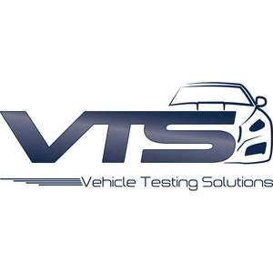

Trade Mark Journal No.2025/018 2 May 2025
UK00004189772 15 April 2025 (9,35,41,42)
Mark 1
Mark 2

- Class 9
- Testing and quality control equipment; Testing and quality control devices; Testing apparatus for diagnostic purposes [other than medical]; Scanners [apparatus] for performing automotive diagnostics; Engine diagnostic apparatus; Software for diagnostics and troubleshooting; Diagnostic apparatus, not for medical purposes; Apparatus, instruments and cables for electricity; Data cables; Material testing instruments and machines; Testing apparatus and instruments; Cable harnesses; Electric wire harnesses for automobiles; Computer hardware; Testing software; Data loggers and recorders; Connectors [electricity]; Simulators; Computer software platforms, recorded or downloadable; Computer applications for automotive electronic control; Test benches.
- Class 35
- Business management and consultancy services; Outsourcing services [business assistance]; Retail services in relation to vehicles; Retail services in relation to computer hardware; Retail services in relation to car accessories; Retail services relating to automobile parts; Retail services for computer software; Demonstration of goods; Sales promotion for others; Advertising, marketing and promotional services; Organization of events, exhibitions, fairs and shows for commercial, promotional and advertising purposes; Retail services relating to automobile accessories.
- Class 41
- Publication of educational and training guides; Education and training in the field of automotive engineering; Education, teaching and training; Arranging and conducting of seminars and workshops; Provision of non-downloadable electronic publications; Education information; Provision of entertainment via podcast; Engineering training services.
- Class 42
- Testing of vehicles; Engineering services; Research and development services in the field of engineering; Industrial engineering design services; Scientific services and research relating thereto; Technological services and research relating thereto; Technical consultancy relating to product development; Design and development of computer hardware and software; Automotive inspections; Research and development for others; Research and development of new products for others; Design and testing for new product development; Testing, authentication and quality control.
Vehicle Testing Solutions Ltd
Representative: Trama Legal s.r.o.